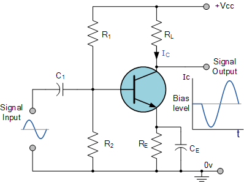
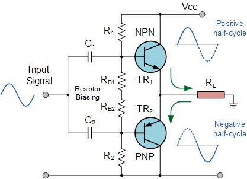
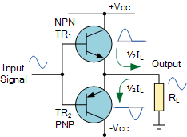
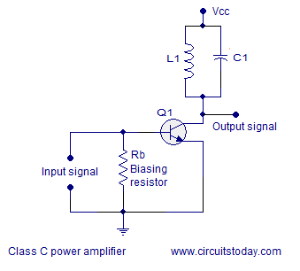

Amplifiers are classified based on biasing conditions, conduction angle, and output signal characteristics. Each configuration serves specific analog functions.
📗 1. Class A Amplifier
Conducts for entire 360° of the input cycle
High linearity, low distortion, low efficiency (~25-30%)
Used in small signal amplification (e.g. audio preamps)

Biased so transistor is always conducting; signal swings within the active region.
📘 2. Class B Amplifier
Conducts for 180° of the input cycle
Two transistors amplify alternate halves of the waveform (push-pull)
Higher efficiency (~70%), but causes crossover distortion

Class B suffers from zero-voltage crossover distortion at the origin.
📙 3. Class AB Amplifier
Hybrid of A and B — conducts more than 180° but less than 360°
Improved linearity over Class B; better efficiency than Class A
Widely used in audio amplifiers

📒 4. Class C Amplifier
Conducts for less than 180°
Highly efficient but nonlinear
Used for RF applications with tuned circuits

🎞️ Animation: Conduction Angles
Waveforms above show typical conduction patterns for various amplifier classes.
🧮 Amplifier Metrics
Voltage Gain (Av): Vout/Vin
Power Gain (Ap): Pout/Pin
Efficiency: Pout/PDC
Input/Output Impedance: Critical for matching and maximum power transfer
📘 Example
A Class A amplifier has a VCC = 12V and quiescent current IQ = 50mA.